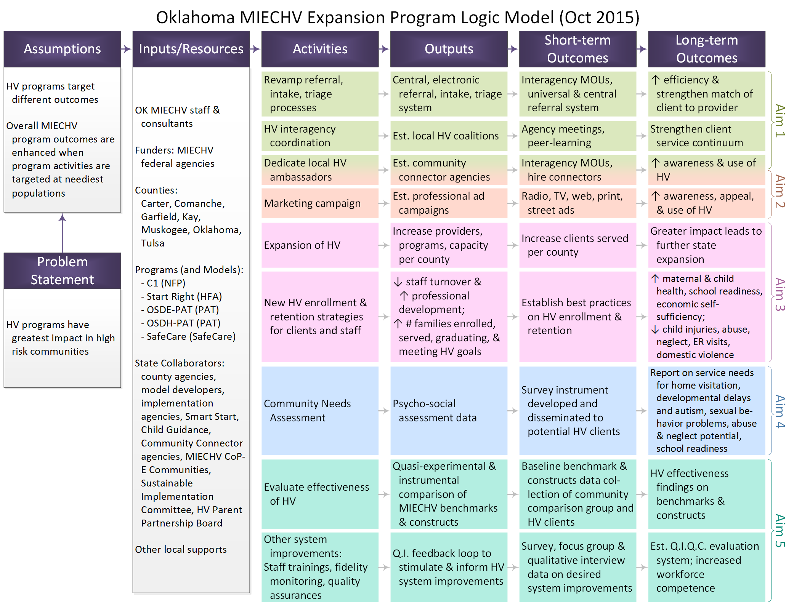

Provide ongoing support to high-quality evidence-based home visiting programs and for the expansion of evidence-based home visiting programs funded, in whole or in part, by the MIECHV program through increased enrollment and retention of families served. Additionally, this funding opportunity will continue the program’s emphasis on rigorous research by grounding the proposed work in relevant empirical literature and by including requirements to evaluate work proposed under this grant.
Understanding of this proposal may benefit from the following resources:
(To be added once the grant is submitted officially.)
